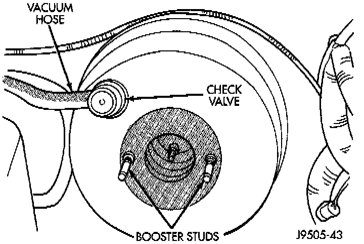
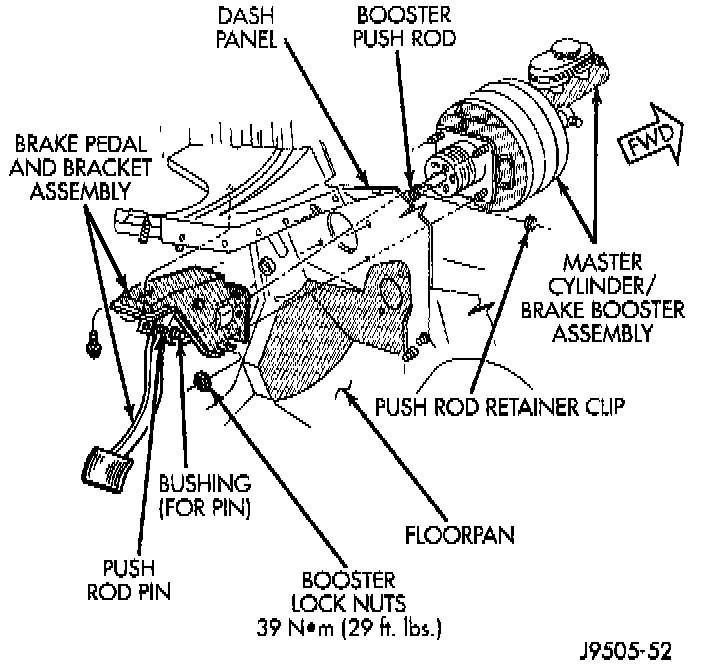

Vacuum Brake Booster: Service and Repair
REMOVAL1. Remove air filter housing.
2. Remove master cylinder, combination valve, and Hydraulic Control Unit (HCU).

3. Disconnect vacuum hose at booster check valve.

4. Remove retainer clip that holds booster push rod on pedal pin. Then slide push rod off pin.
5. Remove four locknuts that attach booster to dash panel.
6. In engine compartment, slide booster forward, tilt it upward slightly, and remove it from engine compartment.
7. If booster will be stored on bench for any length of time, cover booster with shop towels to prevent dust entry and place short lengths of rubber hose over booster studs to protect threads.
INSTALLATION
1. Check condition of grommet that secures check valve in booster. Replace grommet if cut, torn, or loose (no longer secures valve tightly).
2. Wipe booster mounting surface of dash panel clean with shop towel.
3. Align and position booster on engine compartment side of dash panel.
4. Inside passenger compartment:
a. Lubricate pedal pin and bushing with Mopar multi-mileage grease.
b. Install booster attaching nuts on studs. Tighten attaching nuts to 39 Nm (29 ft. lbs.).
c. Slide booster push rod on pedal pin. Then secure rod to pin with retainer clip.
5. In engine compartment, attach vacuum hose to booster check valve.
6. Install master cylinder, combination valve, and HCU.
7. Bleed brakes. Service and Repair
8. Install engine air cleaner and hoses.